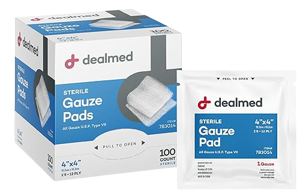
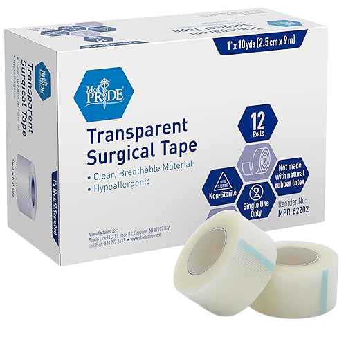
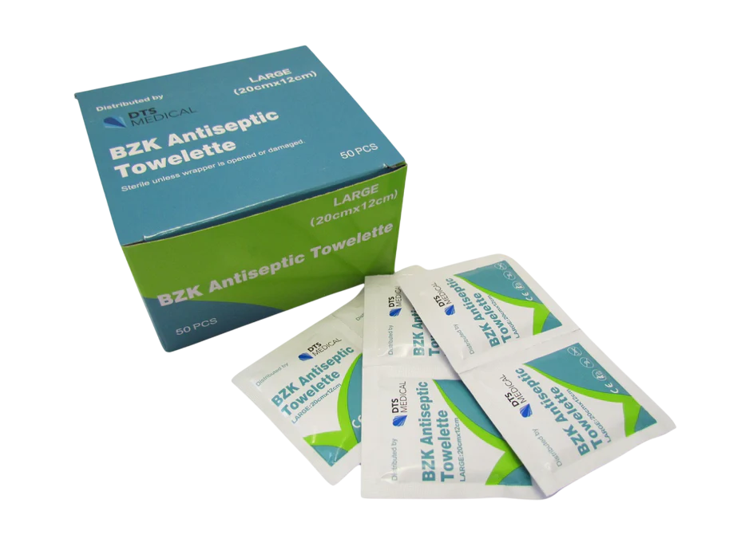
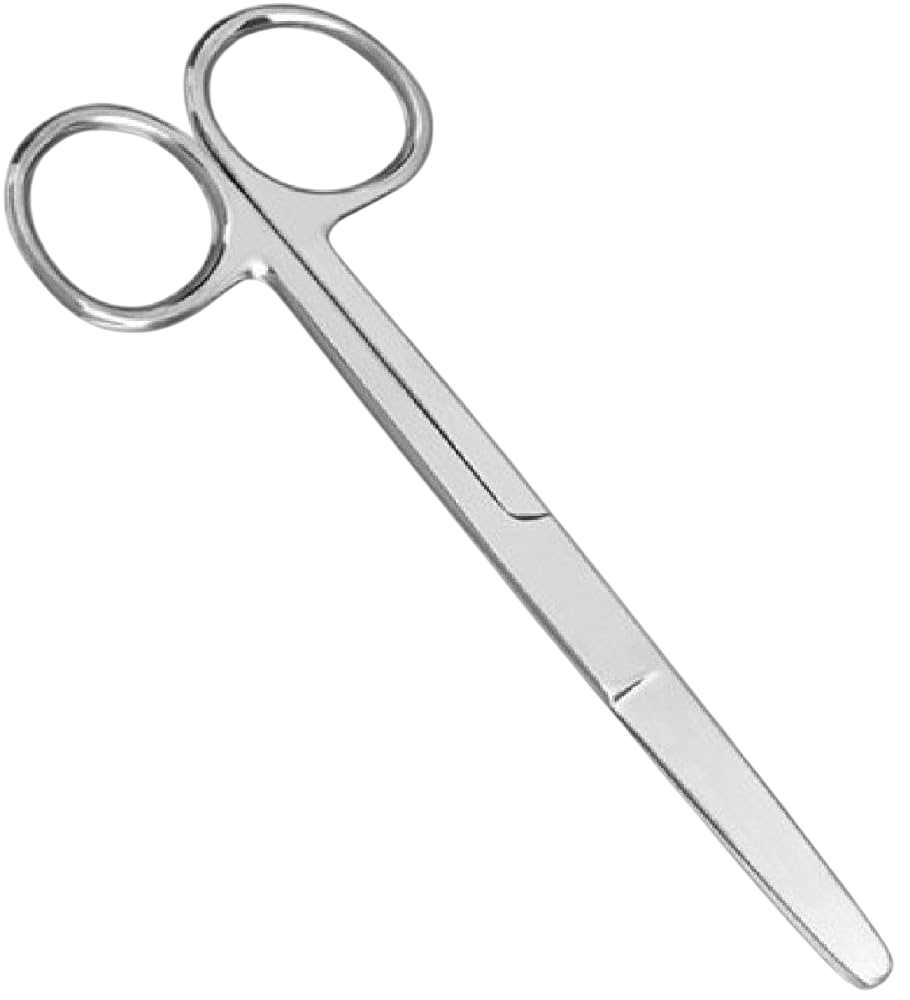
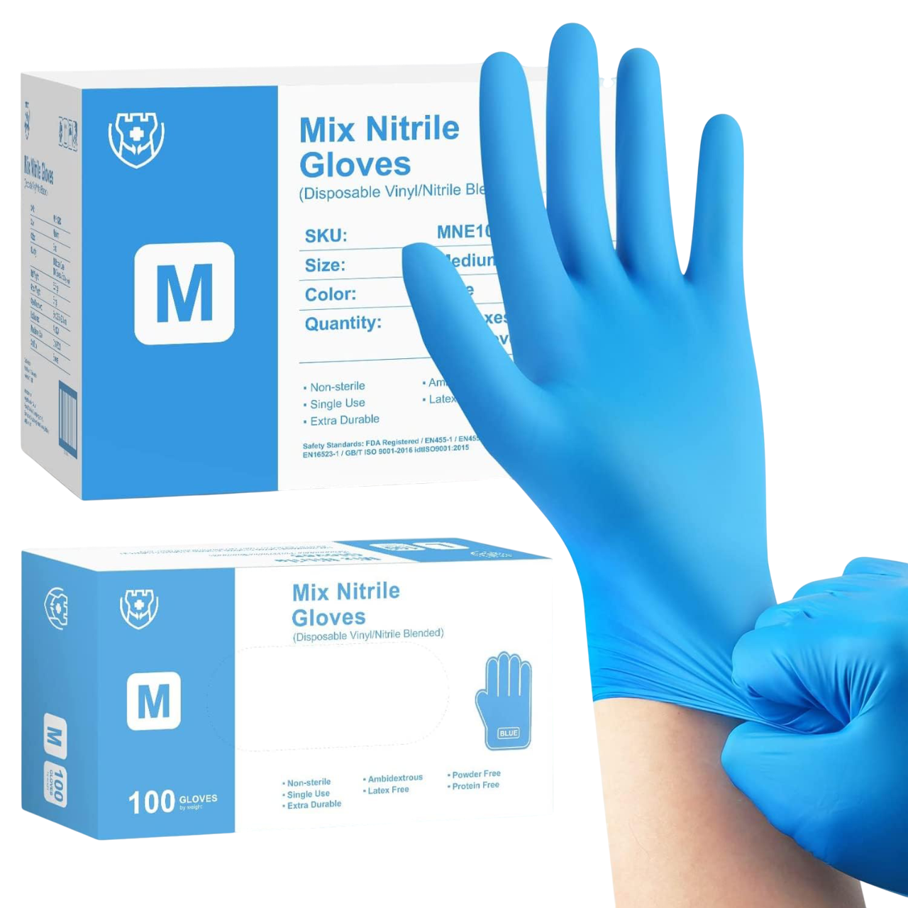
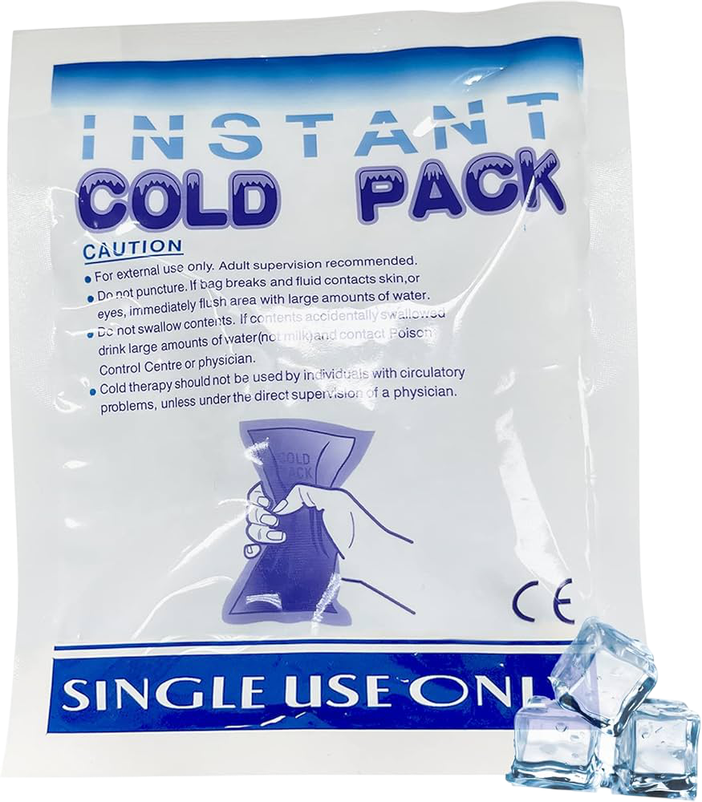
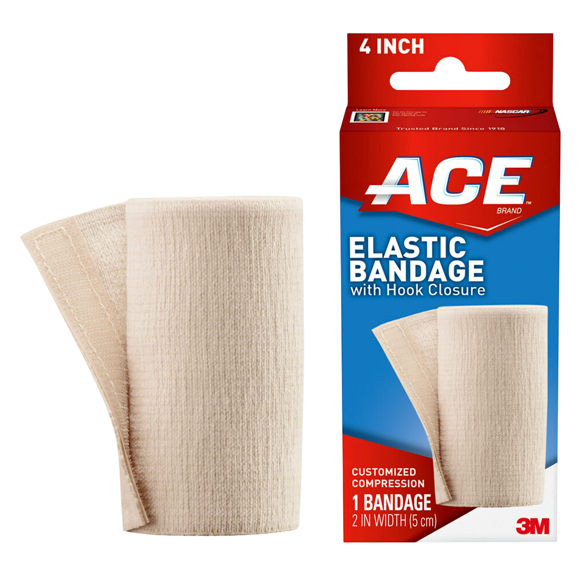
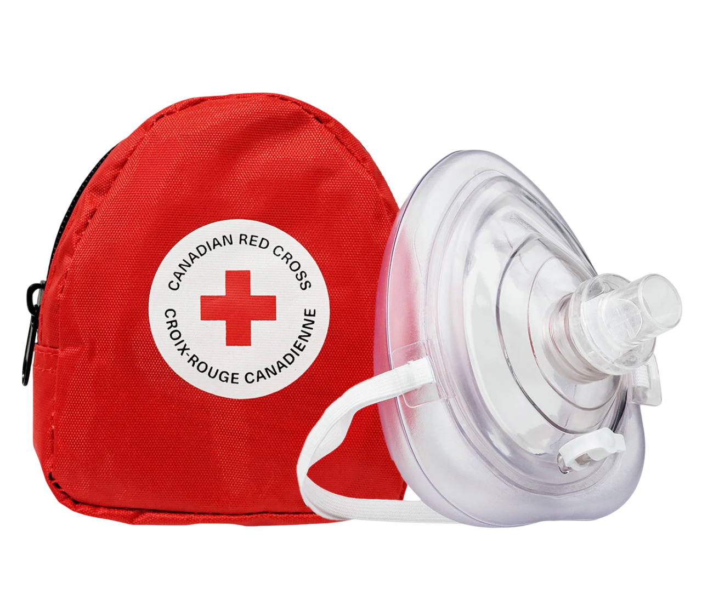

Adhesive Bandages
Assorted sterile bandages for minor cuts and scrapes.

Sterile Gauze Pads
Various sizes of absorbent sterile gauze pads.

Medical Adhesive Tape
Hypoallergenic tape to secure dressings and gauze.

Antiseptic Wipes
Alcohol or povidone-iodine wipes to clean skin.

Tweezers
Stainless-steel tweezers for splinter removal.

Blunt Tip Scissors
Angled scissors for safely cutting dressings.

Disposable Gloves
Nitrile or vinyl gloves for hygiene and protection.

Instant Cold Pack
Single-use cold pack for reducing swelling.

Elastic (ACE) Bandage
Compression bandage for sprains and strains.

CPR Face Shield
Barrier device with one-way valve for rescue breaths.